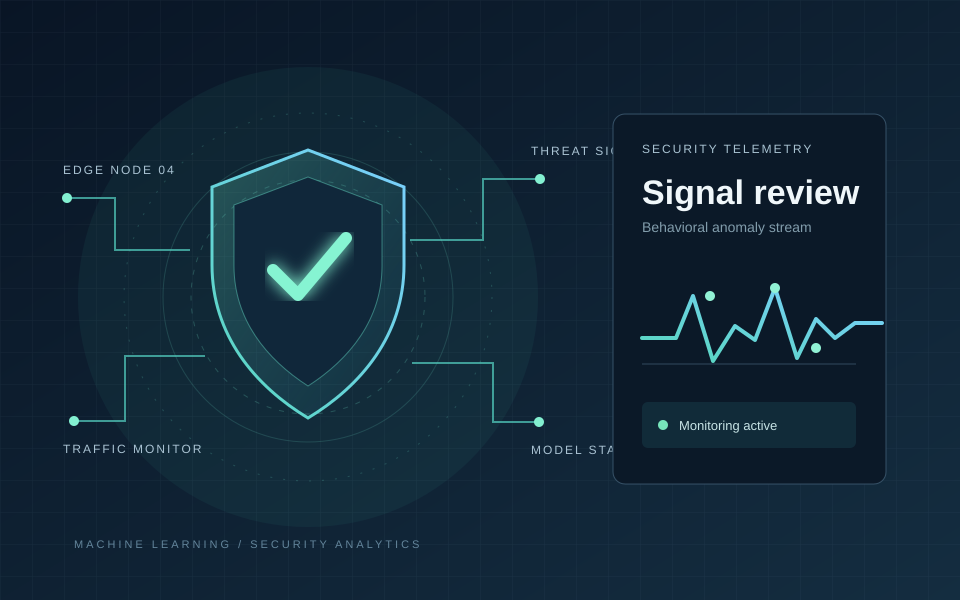
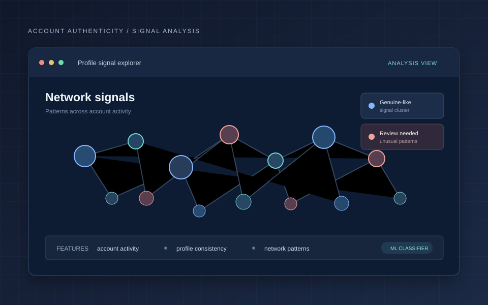
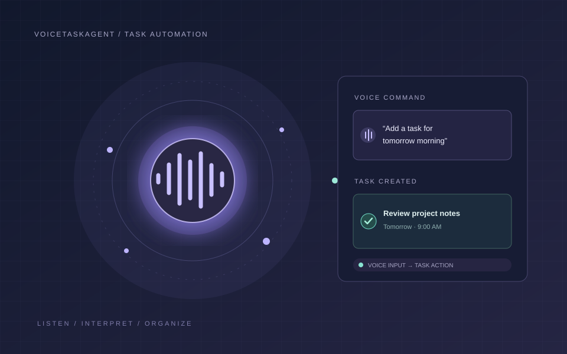

Programming
PythonJavaSQLJavaScript
DATA SCIENCE / MCA
I’m Mybalan S, an MCA graduate and Data Science Intern at Gradtwin. I work across Python, machine learning, and software development to turn technical ideas into practical projects.
import pandas as pd02from sklearn import model03 04data = pd.read_csv("data.csv")05features = data.dropna()06print("Ready to explore")01 / A LITTLE ABOUT ME
I’m an MCA graduate and Data Science intern at Gradtwin Pvt. Ltd. (2026), building experience across data workflows and software development.
My interests include exploratory data analysis, machine learning fundamentals, and building software that solves clear problems. I value sound fundamentals, readable code, and explaining technical work in a straightforward way. I’m open to entry-level IT and data opportunities.
02 / TECHNICAL TOOLKIT
Tools I use and concepts I’m developing through projects and internship work.
03 / EXPERIENCE
INTERNSHIP
Gradtwin Pvt. Ltd.
Building hands-on experience in data science workflows, from understanding data and exploring patterns to learning how machine learning can support practical problem solving.
04 / PROJECT WORK
Project summaries. Add implementation details, measurable results, and source links as each project is finalized.

Explores machine-learning approaches to cybersecurity monitoring.Examines patterns that may signal suspicious activity in data.Focuses on distinguishing unusual activity from normal behavior.Aims to support earlier, data-informed security decisions.

Studies account signals linked to inauthentic activity on X.Explores account data to identify useful detection signals.Uses machine-learning classification concepts to assess profiles.Aims to identify suspicious activity while reducing false alarms.
A patent has been published for this project. View the document below.
View published patent ↗
Turns spoken requests into simple tasks through a voice interface.Captures the requested action and relevant task details.Automates task entry to reduce repetitive manual steps.Makes everyday task management more hands-free.
05 / THE FOUNDATION
Nandha Engineering College · 2026
Specialization & leadership06 / YOUR NEXT STEP
Open to entry-level opportunities in IT and data. Have a role, project, or idea in mind? I’d love to hear from you.
Say hello ↗